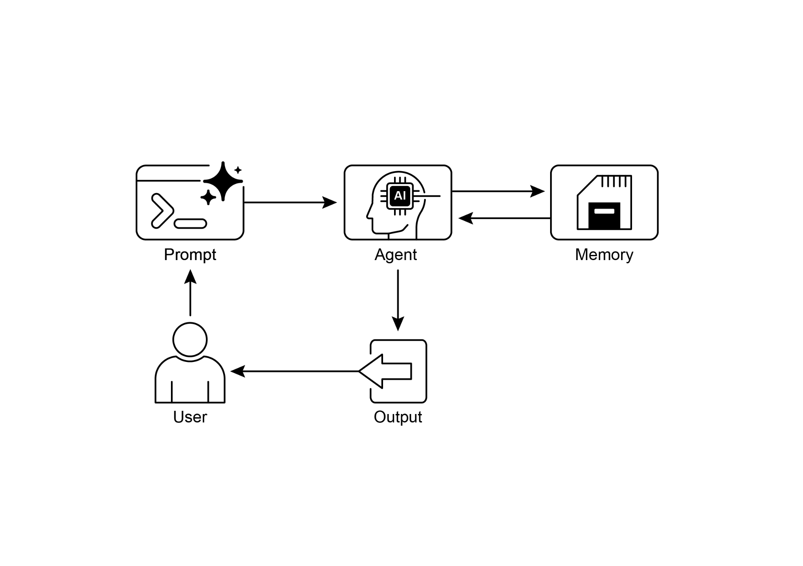

读书 · Agentic Design Patterns · 中英对照
第 8 章 · 记忆管理 Memory Management
Chapter 8: Memory Management · 《Agentic Design Patterns》 · Antonio Gulli · 2025
讲智能体如何用短期上下文与长期持久存储管理记忆，并给出ADK与LangChain实现。
← 返回导读 原书 PDF · 第130页起 上一章:第7章 下一章:第9章
本章要点
① 短期记忆存在于LLM上下文窗口，容量有限且会话结束即失 ① 长期记忆存于向量库等外部存储，按语义检索并注入当前上下文 ① ADK用Session、State、MemoryService三层管理会话与长期知识 ① LangChain/LangGraph用ConversationBufferMemory与Store实现短长期记忆
本章一图流
短期上下文LLM窗口有限，会话结束即失→长期存储向量库持久保存，按语义检索→检索注入召回相关知识，注入当前上下文→框架实现ADK三层与LangChain记忆组件
短期上下文负责即时推理，长期存储负责跨会话知识，检索注入把两者连接起来。
原书插图

本章划线句
划线句(逐字校验)
"Short-Term Memory (Contextual Memory): Similar to working memory, this holds information currently being processed or recently accessed."
为什么值得划线:定义短期记忆，是理解全章的基础
划线句(逐字校验)
"Long-Term Memory (Persistent Memory): This acts as a repository for information agents need to retain across various interactions, tasks, or extended periods, akin to long-term knowledge bases."
为什么值得划线:点明长期记忆的持久化本质
划线句(逐字校验)
"The standardized solution is to implement a dual-component memory system that distinguishes between short-term and long-term storage."
为什么值得划线:概括本章核心方案：双组件记忆系统
正文(英中对照)
第8章：内存管理（Memory Management） Chapter 8: Memory Management
"Effective memory management is crucial for intelligent agents to retain information. Agents require different types of memory, much like humans, to operate efficiently. This chapter delves into memory management, specifically addressing the immediate (short-term) and persistent (long-term) memory requirements of agents. In agent systems, memory refers to an agent's ability to retain and utilize information from past interactions, observations, and learning experiences. This capability allows agents to make informed decisions, maintain conversational context, and improve over time."
有效的记忆管理对于智能体保留信息至关重要。智能体需要不同类型的记忆，就像人类一样，才能高效运作。本章深入探讨记忆管理，具体针对智能体的即时（短期）和持久（长期）记忆需求。在智能体系统中，记忆指的是智能体保留并利用来自过去交互、观察和学习经验的信息的能力。这种能力使智能体能够做出明智决策、维持对话上下文并随时间改进。
导读注:点出记忆管理对智能体的重要性，区分短期与长期记忆需求。
"Agent memory is generally categorized into two main types: ● Short-Term Memory (Contextual Memory): Similar to working memory, this holds information currently being processed or recently accessed. For agents using large language models (LLMs), short-term memory primarily exists within the context window. This window contains recent messages, agent replies, tool usage results, and agent reflections from the current interaction, all of which inform the LLM's subsequent responses and actions. The context window has a limited capacity, restricting the amount of recent information an agent can directly access."
Agent 记忆通常分为两大类：● 短期记忆（上下文记忆，Contextual Memory）：类似于工作记忆，保存当前正在处理或最近访问的信息。对于使用大语言模型（LLM）的 agent 而言，短期记忆主要存在于上下文窗口（context window）内。该窗口包含最近的消息、agent 回复、工具使用结果以及当前交互中 agent 的 Reflection，这些都会影响 LLM 后续的响应与动作。上下文窗口容量有限，限制了 agent 可直接访问的近期信息量。
导读注:点明短期记忆即上下文窗口，其容量有限是 agent 记忆的核心约束。
"Efficient short-term memory management involves keeping the most relevant information within this limited space, possibly through techniques like summarizing older conversation segments or emphasizing key details. The advent of models with 'long context' windows simply expands the size of this short-term memory, allowing more information to be held within a single interaction. However, this context is still ephemeral and is lost once the session concludes, and it can be costly and inefficient to process every time."
高效的短期记忆管理涉及在这个有限空间内保留最相关的信息，可能通过总结较早的对话片段或强调关键细节等技术来实现。具有'长上下文'（long context）窗口的模型的出现只是扩展了这种短期记忆的容量，允许在单次交互中容纳更多信息。然而，这种上下文仍然是短暂的，一旦会话结束就会丢失，而且每次处理它可能既昂贵又低效。
导读注:点出长上下文只是扩大短期记忆，会话结束即丢失且处理成本高。
"Consequently, agents require separate memory types to achieve true persistence, recall information from past interactions, and build a lasting knowledge base. ● Long-Term Memory (Persistent Memory): This acts as a repository for information agents need to retain across various interactions, tasks, or extended periods, akin to long-term knowledge bases. Data is typically stored outside the agent's immediate processing environment, often in databases, knowledge graphs, or vector databases. In vector databases, information is converted into numerical vectors and stored, enabling agents to retrieve data based on semantic similarity rather than exact keyword matches, a process known as semantic search."
因此，智能体需要独立的记忆类型来实现真正的持久性、从过往交互中回忆信息，并构建持久的知识库。● 长期记忆（持久记忆）：它充当信息存储库，用于保存智能体在各种交互、任务或较长时期内需要保留的信息，类似于长期知识库。数据通常存储在智能体即时处理环境之外，常见于数据库、知识图谱或向量数据库中。在向量数据库中，信息被转换为数值向量并存储，使智能体能够基于语义相似性而非精确关键词匹配来检索数据，这一过程称为语义搜索。
导读注:点出智能体需独立记忆类型，并解释向量数据库的语义搜索机制。
"When an agent needs information from long-term memory, it queries the external storage, retrieves relevant data, and integrates it into the short-term context for immediate use, thus combining prior 1 knowledge with the current interaction. Practical Applications & Use Cases Memory management is vital for agents to track information and perform intelligently over time. This is essential for agents to surpass basic question-answering capabilities. Applications include: ● Chatbots and Conversational AI: Maintaining conversation flow relies on short-term memory. Chatbots require remembering prior user inputs to provide coherent responses."
当智能体（agent）需要从长期记忆（long-term memory）中获取信息时，它会查询外部存储、检索相关数据，并将其整合到短期上下文（short-term context）中以供即时使用，从而将先前的知识与当前交互结合起来。实际应用与用例 记忆管理对于智能体随时间跟踪信息并智能地执行任务至关重要。这对于智能体超越基本的问答能力是必不可少的。应用包括：● 聊天机器人与对话式 AI（Chatbots and Conversational AI）：维持对话流依赖于短期记忆。聊天机器人需要记住先前的用户输入，以提供连贯的回复。
导读注:点出记忆管理是智能体超越基础问答的关键，并给出聊天机器人这一典型用例。
"Long-term memory enables chatbots to recall user preferences, past issues, or prior discussions, offering personalized and continuous interactions. ● Task-Oriented Agents: Agents managing multi-step tasks need short-term memory to track previous steps, current progress, and overall goals. This information might reside in the task's context or temporary storage. Long-term memory is crucial for accessing specific user-related data not in the immediate context. ● Personalized Experiences: Agents offering tailored interactions utilize long-term memory to store and retrieve user preferences, past behaviors, and personal information."
长期记忆使聊天机器人能够回忆用户偏好、过往问题或先前讨论，从而提供个性化且连续的交互。● 任务导向型智能体（Task-Oriented Agents）：管理多步骤任务的智能体需要短期记忆来跟踪先前步骤、当前进度和总体目标。这些信息可能存在于任务的上下文或临时存储中。长期记忆对于访问不在即时上下文中的特定用户相关数据至关重要。● 个性化体验：提供定制化交互的智能体利用长期记忆来存储和检索用户偏好、过往行为和个人信息。
导读注:点明长期记忆在个性化交互与任务型智能体中的关键作用。
"This allows agents to adapt their responses and suggestions. ● Learning and Improvement: Agents can refine their performance by learning from past interactions. Successful strategies, mistakes, and new information are stored in long-term memory, facilitating future adaptations. Reinforcement learning agents store learned strategies or knowledge in this way. ● Information Retrieval (RAG): Agents designed for answering questions access a knowledge base, their long-term memory, often implemented within Retrieval Augmented Generation (RAG). The agent retrieves relevant documents or data to inform its responses. ● Autonomous Systems: Robots or self-driving cars require memory for maps, routes, object locations, and learned behaviors."
这使智能体（agent）能够调整其响应和建议。学习与改进：智能体可以通过从过去的交互中学习来优化其表现。成功的策略、错误和新信息被存储在长期记忆中，便于未来的适应。强化学习智能体以这种方式存储学到的策略或知识。信息检索（RAG）：为回答问题而设计的智能体访问知识库，即其长期记忆，通常以检索增强生成（Retrieval Augmented Generation，RAG）实现。智能体检索相关文档或数据以支撑其响应。自主系统：机器人或自动驾驶汽车需要记忆来存储地图、路线、物体位置和学到的行为。
导读注:点出智能体记忆的三大用途：学习改进、RAG 检索、自主系统。
"This involves short-term memory for immediate surroundings and long-term memory for general environmental knowledge. Memory enables agents to maintain history, learn, personalize interactions, and manage complex, time-dependent problems. 2"
这涉及用于即时周围环境的短期记忆和用于一般环境知识的长期记忆。记忆使智能体能够维护历史、学习、个性化交互，并管理复杂的、依赖时间的问题。2
导读注:点出短期与长期记忆的分工，以及记忆对智能体能力的四大作用。
text
Hands-On Code: Memory Management in Google
Agent Developer Kit (ADK)"The Google Agent Developer Kit (ADK) offers a structured method for managing context and memory, including components for practical application. A solid grasp of ADK's Session, State, and Memory is vital for building agents that need to retain information. Just as in human interactions, agents require the ability to recall previous exchanges to conduct coherent and natural conversations. ADK simplifies context management through three core concepts and their associated services. Every interaction with an agent can be considered a unique conversation thread. Agents might need to access data from earlier interactions."
Google Agent Developer Kit (ADK) 提供了一种结构化的方法来管理上下文和记忆，包括用于实际应用的组件。扎实掌握 ADK 的 Session、State 和 Memory 对于构建需要保留信息的 agent 至关重要。正如人类交互一样，agent 需要能够回忆之前的交流，以进行连贯自然的对话。ADK 通过三个核心概念及其相关服务简化了上下文管理。与 agent 的每次交互都可视为一个独特的对话线程。Agent 可能需要访问早期交互中的数据。
导读注:点出 Session、State、Memory 是 ADK 上下文管理的三大核心概念。
"ADK structures this as follows: ● Session: An individual chat thread that logs messages and actions (Events) for that specific interaction, also storing temporary data (State) relevant to that conversation. ● State (session.state): Data stored within a Session, containing information relevant only to the current, active chat thread. ● Memory: A searchable repository of information sourced from various past chats or external sources, serving as a resource for data retrieval beyond the immediate conversation. ADK provides dedicated services for managing critical components essential for building complex, stateful, and context-aware agents."
ADK 将其结构化为如下形式：● Session（会话）：一个单独的聊天线程，记录该特定交互的消息和动作（Events），还存储与该对话相关的临时数据（State）。● State（session.state）：存储在 Session 内的数据，包含仅与当前活动聊天线程相关的信息。● Memory（记忆）：一个可搜索的信息存储库，信息来源于各种过往聊天或外部来源，作为超出即时对话范围的数据检索资源。ADK 提供专门的服务来管理构建复杂、有状态且具备上下文感知能力的 agent 所必需的关键组件。
导读注:厘清 Session、State、Memory 三层结构，是理解有状态 agent 的基础。
"The SessionService manages chat threads (Session objects) by handling their initiation, recording, and termination, while the MemoryService oversees the storage and retrieval of long-term knowledge (Memory). Both the SessionService and MemoryService offer various configuration options, allowing users to choose storage methods based on application needs. In-memory options are available for testing purposes, though data will not persist across restarts. For persistent storage and scalability, ADK also supports database and cloud-based services. 3 Session: Keeping Track of Each Chat A Session object in ADK is designed to track and manage individual chat threads."
SessionService 通过处理聊天线程（Session 对象）的发起、记录和终止来管理它们，而 MemoryService 则负责长期知识（Memory）的存储与检索。SessionService 和 MemoryService 都提供多种配置选项，允许用户根据应用需求选择存储方式。内存选项可用于测试目的，但数据在重启后不会持久化。对于持久化存储和可扩展性，ADK 还支持数据库和基于云的服务。3 Session：跟踪每次聊天 ADK 中的 Session 对象旨在跟踪和管理单个聊天线程。
导读注:SessionService 与 MemoryService 分工明确，内存选项仅限测试，生产需数据库或云服务。
"Upon initiation of a conversation with an agent, the SessionService generates a Session object, represented as `google.adk.sessions.Session`. This object encapsulates all data relevant to a specific conversation thread, including unique identifiers (id, app_name, user_id), a chronological record of events as Event objects, a storage area for session-specific temporary data known as state, and a timestamp indicating the last update (last_update_time). Developers typically interact with Session objects indirectly through the SessionService."
当与 agent 开始对话时，SessionService 会生成一个 Session 对象，表示为 `google.adk.sessions.Session`。该对象封装了与特定对话线程相关的所有数据，包括唯一标识符（id、app_name、user_id）、按时间顺序记录的事件（Event 对象）、用于存储会话特定临时数据的区域（称为 state），以及表示最后更新时间的时间戳（last_update_time）。开发者通常通过 SessionService 间接与 Session 对象交互。
导读注:点明 Session 对象封装对话线程全部数据，开发者经 SessionService 间接操作。
"The SessionService is responsible for managing the lifecycle of conversation sessions, which includes initiating new sessions, resuming previous sessions, recording session activity (including state updates), identifying active sessions, and managing the removal of session data."
SessionService 负责管理对话会话的生命周期，包括启动新会话、恢复之前的会话、记录会话活动（包括状态更新）、识别活跃会话，以及管理会话数据的删除。
导读注:点出 SessionService 的全生命周期管理职责，涵盖会话的创建、恢复、记录与清理。
"The ADK provides several SessionService implementations with varying storage mechanisms for session history and temporary data, such as the InMemorySessionService, which is suitable for testing but does not provide data persistence across application restarts. # Example: Using InMemorySessionService # This is suitable for local development and testing where data # persistence across application restarts is not required. from google.adk.sessions import InMemorySessionService session_service = InMemorySessionService() Then there's DatabaseSessionService if you want reliable saving to a database you manage. # Example: Using DatabaseSessionService # This is suitable for production or development requiring persistent storage. # You need to configure a database URL (e.g., for SQLite, PostgreSQL, etc.). # Requires: pip install google-adk[sqlalchemy] and a database driver (e.g., psycopg2 for PostgreSQL) from google.adk.sessions import DatabaseSessionService # Example using a local SQLite file: db_url = "sqlite:///./my_agent_data.db" session_service = DatabaseSessionService(db_url=db_url) 4 Besides, there's VertexAiSessionService which uses Vertex AI infrastructure for scalable production on Google Cloud. # Example: Using VertexAiSessionService # This is suitable for scalable production on Google Cloud Platform, leveraging # Vertex AI infrastructure for session management. # Requires: pip install google-adk[vertexai] and GCP setup/authentication from google.adk.sessions import VertexAiSessionService PROJECT_ID = "your-gcp-project-id" # Replace with your GCP project ID LOCATION = "us-central1" # Replace with your desired GCP location # The app_name used with this service should correspond to the Reasoning Engine ID or name REASONING_ENGINE_APP_NAME = "projects/your-gcp-project-id/locations/us-central1/reasoningEngines/ your-engine-id" # Replace with your Reasoning Engine resource name session_service = VertexAiSessionService(project=PROJECT_ID, location=LOCATION) # When using this service, pass REASONING_ENGINE_APP_NAME to service methods: # session_service.create_session(app_name=REASONING_ENGINE_APP_NAME, ...) # session_service.get_session(app_name=REASONING_ENGINE_APP_NAME, ...) # session_service.append_event(session, event, app_name=REASONING_ENGINE_APP_NAME) # session_service.delete_session(app_name=REASONING_ENGINE_APP_NAME, ...) Choosing an appropriate SessionService is crucial as it determines how the agent's interaction history and temporary data are stored and their persistence."
ADK 提供了多种 SessionService 实现，用于会话历史和临时数据的存储机制各不相同，例如 InMemorySessionService，它适合测试，但不提供跨应用重启的数据持久化。
# 示例：使用 InMemorySessionService
# 这适用于本地开发和测试，不要求数据
# 跨应用重启持久化。
from google.adk.sessions import InMemorySessionService
session_service = InMemorySessionService()
如果你希望可靠地保存到你管理的数据库，还有 DatabaseSessionService。
# 示例：使用 DatabaseSessionService
# 这适用于需要持久化存储的生产或开发环境。
# 你需要配置数据库 URL（例如用于 SQLite、PostgreSQL 等）。
# 需要：pip install google-adk[sqlalchemy] 以及数据库驱动（例如 PostgreSQL 的 psycopg2）
from google.adk.sessions import DatabaseSessionService
# 使用本地 SQLite 文件的示例：
db_url = "sqlite:///./my_agent_data.db"
session_service = DatabaseSessionService(db_url=db_url)
4 此外，还有 VertexAiSessionService，它使用 Vertex AI 基础设施，在 Google Cloud 上实现可扩展的生产部署。
# 示例：使用 VertexAiSessionService
# 这适用于 Google Cloud Platform 上可扩展的生产环境，利用
# Vertex AI 基础设施进行会话管理。
# 需要：pip install google-adk[vertexai] 以及 GCP 设置/身份验证
from google.adk.sessions import VertexAiSessionService
PROJECT_ID = "your-gcp-project-id" # 替换为你的 GCP 项目 ID
LOCATION = "us-central1" # 替换为你期望的 GCP 位置
# 与此服务一起使用的 app_name 应对应 Reasoning Engine ID 或名称
REASONING_ENGINE_APP_NAME = "projects/your-gcp-project-id/locations/us-central1/reasoningEngines/ your-engine-id" # 替换为你的 Reasoning Engine 资源名称
session_service = VertexAiSessionService(project=PROJECT_ID, location=LOCATION)
# 使用此服务时，将 REASONING_ENGINE_APP_NAME 传递给服务方法：
# session_service.create_session(app_name=REASONING_ENGINE_APP_NAME, ...)
# session_service.get_session(app_name=REASONING_ENGINE_APP_NAME, ...)
# session_service.append_event(session, event, app_name=REASONING_ENGINE_APP_NAME)
# session_service.delete_session(app_name=REASONING_ENGINE_APP_NAME, ...)
选择合适的 SessionService 至关重要，因为它决定了 agent 的交互历史和临时数据如何存储及其持久性。
导读注:三种 SessionService 各有适用场景，持久化需求决定选型。
"Each message exchange involves a cyclical process: A message is received, the Runner retrieves or establishes a Session using the SessionService, the agent processes the message using the Session's context (state and historical interactions), the agent generates a response and may update the state, the Runner encapsulates this as an Event, and the session_service.append_event method records the new 5 event and updates the state in storage. The Session then awaits the next message. Ideally, the delete_session method is employed to terminate the session when the interaction concludes. This process illustrates how the SessionService maintains continuity by managing the Session-specific history and temporary data."
每次消息交换都涉及一个循环过程：接收消息后，Runner 使用 SessionService 检索或建立 Session（会话），agent 利用 Session 的上下文（状态和历史交互）处理该消息，agent 生成响应并可能更新状态，Runner 将其封装为 Event（事件），然后 session_service.append_event 方法记录新事件并更新存储中的状态。随后 Session 等待下一条消息。理想情况下，当交互结束时，应使用 delete_session 方法终止会话。此过程说明了 SessionService 如何通过管理 Session 特定的历史和临时数据来维持连续性。
导读注:揭示消息循环中 SessionService 维持会话连续性的关键机制。
"State: The Session's Scratchpad In the ADK, each Session, representing a chat thread, includes a state component akin to an agent's temporary working memory for the duration of that specific conversation. While session.events logs the entire chat history, session.state stores and updates dynamic data points relevant to the active chat. Fundamentally, session.state operates as a dictionary, storing data as key-value pairs. Its core function is to enable the agent to retain and manage details essential for coherent dialogue, such as user preferences, task progress, incremental data collection, or conditional flags influencing subsequent agent actions."
状态：Session 的暂存区（Scratchpad）。在 ADK 中，每个 Session 代表一个聊天线程，包含一个状态组件，类似于 agent 在特定对话期间的临时工作记忆。session.events 记录整个聊天历史，而 session.state 则存储并更新与当前活跃聊天相关的动态数据点。从根本上说，session.state 作为一个字典运行，以键值对形式存储数据。其核心功能是使 agent 能够保留和管理连贯对话所必需的细节，例如用户偏好、任务进度、增量数据收集或影响后续 agent 操作的条件标志。
导读注:点明 session.state 是 agent 的临时工作记忆，与记录历史的 events 分工不同。
"The state’s structure comprises string keys paired with values of serializable Python types, including strings, numbers, booleans, lists, and dictionaries containing these basic types. State is dynamic, evolving throughout the conversation. The permanence of these changes depends on the configured SessionService. State organization can be achieved using key prefixes to define data scope and persistence. Keys without prefixes are session-specific. ● The user: prefix associates data with a user ID across all sessions. ● The app: prefix designates data shared among all users of the application. ● The temp: prefix indicates data valid only for the current processing turn and is not persistently stored."
状态的结构由字符串键与可序列化的 Python 类型值配对组成，包括字符串、数字、布尔值、列表以及包含这些基本类型的字典。状态是动态的，在整个对话过程中不断演化。这些变更的持久性取决于所配置的 SessionService。可以使用键前缀来组织状态，以定义数据作用域和持久性。无前缀的键是会话特定的。● user: 前缀将数据与某个用户 ID 关联，跨所有会话。● app: 前缀指定在应用程序所有用户之间共享的数据。● temp: 前缀表示仅在当前处理轮次有效且不被持久存储的数据。
导读注:键前缀决定状态作用域：user/app/temp 分别对应跨会话、全局共享与单轮临时数据。
"The agent accesses all state data through a single session.state dictionary. The SessionService handles data retrieval, merging, and persistence. State should be updated upon adding an Event to the session history via session_service.append_event(). This ensures accurate tracking, proper saving in persistent services, and safe handling of state changes. 1. The Simple Way: Using output_key (for Agent Text Replies): This is the easiest method if you just want to save your agent's final text response directly into the state. When you set up your LlmAgent, just tell it the output_key you want to use. The Runner sees this and automatically creates the necessary actions to 6 save the response to the state when it appends the event."
Agent 通过单一的 session.state 字典访问所有状态数据。SessionService 负责数据的检索、合并与持久化。状态应在通过 session_service.append_event() 将 Event 添加到会话历史时更新。这确保了准确的跟踪、在持久化服务中的正确保存，以及对状态变更的安全处理。1. 简单方式：使用 output_key（用于 Agent 文本回复）：如果你只想将 Agent 的最终文本回复直接保存到状态中，这是最简单的方法。在设置 LlmAgent 时，只需告诉它你想使用的 output_key。Runner 会识别这一点，并在追加事件时自动创建必要的动作，以将回复保存到状态中。
导读注:强调状态更新须经 append_event，并介绍用 output_key 保存回复的最简方式。
"Let's look at a code example demonstrating state update via output_key."
让我们看一个通过 output_key 演示状态更新的代码示例。
导读注:引出用 output_key 更新状态的代码示例。
python
# Import necessary classes from the Google Agent Developer Kit
(ADK)
from google.adk.agents import LlmAgent
from google.adk.sessions import InMemorySessionService, Session
from google.adk.runners import Runner
from google.genai.types import Content, Part"# Define an LlmAgent with an output_key. greeting_agent = LlmAgent( name="Greeter", model="gemini-2.0-flash", instruction="Generate a short, friendly greeting.", output_key="last_greeting" ) # --- Setup Runner and Session -- app_name, user_id, session_id = "state_app", "user1", "session1" session_service = InMemorySessionService() runner = Runner( agent=greeting_agent, app_name=app_name, session_service=session_service ) session = session_service.create_session( app_name=app_name, user_id=user_id, session_id=session_id ) print(f"Initial state: {session.state}")"
# 定义一个带有 output_key 的 LlmAgent。
greeting_agent = LlmAgent(
name="Greeter",
model="gemini-2.0-flash",
instruction="Generate a short, friendly greeting.",
output_key="last_greeting"
)
# --- 设置 Runner 与 Session --
app_name, user_id, session_id = "state_app", "user1", "session1"
session_service = InMemorySessionService()
runner = Runner(
agent=greeting_agent,
app_name=app_name,
session_service=session_service
)
session = session_service.create_session(
app_name=app_name,
user_id=user_id,
session_id=session_id
)
print(f"Initial state: {session.state}")
导读注:output_key 让 Agent 输出自动写入会话状态，是状态管理的关键。
python
# --- Run the Agent -- user_message = Content(parts=[Part(text="Hello")])
print("\n--- Running the agent ---")
for event in runner.run(
user_id=user_id,
session_id=session_id,
new_message=user_message
):
if event.is_final_response():
print("Agent responded.")"# --- Check Updated State -- # Correctly check the state *after* the runner has finished 7"
# --- 检查更新后的状态 -- # 在 runner 完成后正确地检查状态 7
导读注:强调状态检查的时机：必须在 runner 结束后进行。
python
processing all events.
updated_session = session_service.get_session(app_name, user_id,
session_id)
print(f"\nState after agent run: {updated_session.state}")"Behind the scenes, the Runner sees your output_key and automatically creates the necessary actions with a state_delta when it calls append_event. 2. The Standard Way: Using EventActions.state_delta (for More Complicated Updates): For times when you need to do more complex things – like updating several keys at once, saving things that aren't just text, targeting specific scopes like user: or app:, or making updates that aren't tied to the agent's final text reply – you'll manually build a dictionary of your state changes (the state_delta) and include it within the EventActions of the Event you're appending. Let's look at one example:"
在幕后，Runner 会看到你的 output_key，并在调用 append_event 时自动创建带有 state_delta 的必要 actions。2. 标准方式：使用 EventActions.state_delta（用于更复杂的更新）：当你需要做更复杂的事情时——比如一次更新多个键、保存不只是文本的内容、定位特定作用域如 user: 或 app:，或者进行与 agent 最终文本回复无关的更新——你将手动构建一个状态变更字典（即 state_delta），并将其包含在你所追加的 Event 的 EventActions 中。让我们看一个例子：
导读注:揭示 output_key 的自动机制，并引出 state_delta 手动更新的标准做法。
python
import time
from google.adk.tools.tool_context import ToolContext
from google.adk.sessions import InMemorySessionService"# --- Define the Recommended Tool-Based Approach -- def log_user_login(tool_context: ToolContext) -> dict: """ Updates the session state upon a user login event. This tool encapsulates all state changes related to a user login. Args: tool_context: Automatically provided by ADK, gives access to session state. Returns: A dictionary confirming the action was successful. """ # Access the state directly through the provided context. state = tool_context.state"
# --- 定义推荐的基于工具的方法 --
def log_user_login(tool_context: ToolContext) -> dict:
"""
在用户登录事件发生时更新会话状态。
该工具封装了与用户登录相关的所有状态变更。
参数：
tool_context：由 ADK 自动提供，用于访问会话状态。
返回：
一个确认操作成功的字典。
"""
# 通过提供的上下文直接访问状态。
state = tool_context.state
导读注:展示基于工具封装状态变更的推荐写法，强调通过 tool_context 直接访问会话状态。
python
# Get current values or defaults, then update the state.
# This is much cleaner and co-locates the logic.
login_count = state.get("user:login_count", 0) + 1
state["user:login_count"] = login_count
state["task_status"] = "active"
state["user:last_login_ts"] = time.time()
state["temp:validation_needed"] = True"print("State updated from within the `log_user_login` tool.") 8"
print("State updated from within the `log_user_login` tool.") 8
导读注:该段为代码片段，展示在 log_user_login 工具内更新状态。
python
return {
"status": "success",
"message": f"User login tracked. Total logins:
{login_count}."
}"# --- Demonstration of Usage --# In a real application, an LLM Agent would decide to call this tool. # Here, we simulate a direct call for demonstration purposes. # 1. Setup session_service = InMemorySessionService() app_name, user_id, session_id = "state_app_tool", "user3", "session3" session = session_service.create_session( app_name=app_name, user_id=user_id, session_id=session_id, state={"user:login_count": 0, "task_status": "idle"} ) print(f"Initial state: {session.state}") # 2. Simulate a tool call (in a real app, the ADK Runner does this) # We create a ToolContext manually just for this standalone example. from google.adk.tools.tool_context import InvocationContext mock_context = ToolContext( invocation_context=InvocationContext( app_name=app_name, user_id=user_id, session_id=session_id, session=session, session_service=session_service ) )"
# --- 使用演示 --# 在真实应用中，LLM Agent 会决定调用此工具。# 此处，我们为演示目的模拟一次直接调用。# 1. 设置
session_service = InMemorySessionService()
app_name, user_id, session_id = "state_app_tool", "user3", "session3"
session = session_service.create_session(
app_name=app_name,
user_id=user_id,
session_id=session_id,
state={"user:login_count": 0, "task_status": "idle"}
)
print(f"Initial state: {session.state}")
# 2. 模拟一次工具调用（在真实应用中，由 ADK Runner 执行此操作）
# 我们仅为这个独立示例手动创建一个 ToolContext。
from google.adk.tools.tool_context import InvocationContext
mock_context = ToolContext(
invocation_context=InvocationContext(
app_name=app_name,
user_id=user_id,
session_id=session_id,
session=session,
session_service=session_service
)
)
导读注:演示如何手动构造 ToolContext 以模拟工具调用，真实场景由 ADK Runner 自动完成。
python
# 3. Execute the tool
log_user_login(mock_context)python
# 4. Check the updated state
updated_session = session_service.get_session(app_name, user_id,
session_id)
print(f"State after tool execution: {updated_session.state}")"# Expected output will show the same state change as the # "Before" case, # but the code organization is significantly cleaner 9 # and more robust. This code demonstrates a tool-based approach for managing user session state in an application. It defines a function log_user_login, which acts as a tool. This tool is responsible for updating the session state when a user logs in. The function takes a ToolContext object, provided by the ADK, to access and modify the session's state dictionary. Inside the tool, it increments a user:login_count, sets the task_status to "active", records the user:last_login_ts (timestamp), and adds a temporary flag temp:validation_needed. The demonstration part of the code simulates how this tool would be used."
# 预期输出将显示与“Before”案例相同的状态变化，
# 但代码组织明显更清晰
9 # 且更健壮。这段代码演示了一种基于工具的方法，用于管理应用程序中的用户会话状态。它定义了一个函数 log_user_login，该函数充当一个工具。此工具负责在用户登录时更新会话状态。该函数接收一个由 ADK 提供的 ToolContext 对象，用于访问和修改会话的状态字典。在工具内部，它会递增 user:login_count，将 task_status 设置为 "active"，记录 user:last_login_ts（时间戳），并添加一个临时标志 temp:validation_needed。代码的演示部分模拟了如何使用此工具。
导读注:展示基于工具管理会话状态的清晰写法，对比前例更健壮。
"It sets up an in-memory session service and creates an initial session with some predefined state. A ToolContext is then manually created to mimic the environment in which the ADK Runner would execute the tool. The log_user_login function is called with this mock context. Finally, the code retrieves the session again to show that the state has been updated by the tool's execution. The goal is to show how encapsulating state changes within tools makes the code cleaner and more organized compared to directly manipulating state outside of tools. Note that direct modification of the `session.state` dictionary after retrieving a session is strongly discouraged as it bypasses the standard event processing mechanism."
它设置了一个内存会话服务，并创建一个带有一些预定义状态的初始会话。随后手动创建一个 ToolContext 来模拟 ADK Runner 执行该工具的环境。使用这个模拟上下文调用 log_user_login 函数。最后，代码再次检索会话，以表明状态已被工具的执行更新。目标是展示在工具内部封装状态变更，相比在工具外部直接操作状态，如何使代码更清晰、更有条理。请注意，在检索会话后直接修改 `session.state` 字典是强烈不推荐的，因为这会绕过标准的事件处理机制。
导读注:强调在工具内封装状态变更更清晰，并警告勿直接改 session.state。
"Such direct changes will not be recorded in the session's event history, may not be persisted by the selected `SessionService`, could lead to concurrency issues, and will not update essential metadata such as timestamps. The recommended methods for updating the session state are using the `output_key` parameter on an `LlmAgent` (specifically for the agent's final text responses) or including state changes within `EventActions.state_delta` when appending an event via `session_service.append_event()`. The `session.state` should primarily be used for reading existing data."
此类直接修改不会被记录在会话的事件历史中，可能不会被所选的 `SessionService` 持久化，可能导致并发问题，并且不会更新时间戳等关键元数据。更新会话状态的推荐方法是：在 `LlmAgent` 上使用 `output_key` 参数（专门用于 agent 的最终文本响应），或在通过 `session_service.append_event()` 追加事件时将状态变更包含在 `EventActions.state_delta` 中。`session.state` 应主要用于读取现有数据。
导读注:强调直接改 state 的风险，推荐用 output_key 或 state_delta 更新。
"To recap, when designing your state, keep it simple, use basic data types, give your keys clear names and use prefixes correctly, avoid deep nesting, and always update state using the append_event process. Memory: Long-Term Knowledge with MemoryService In agent systems, the Session component maintains a record of the current chat history (events) and temporary data (state) specific to a single conversation. However, 10 for agents to retain information across multiple interactions or access external data, long-term knowledge management is necessary."
回顾一下，在设计状态时，保持简单，使用基本数据类型，给键起清晰的名称并正确使用前缀，避免深层嵌套，并始终使用 append_event 流程更新状态。记忆：使用 MemoryService 的长期知识 在 agent 系统中，Session 组件维护当前聊天历史（events）和特定于单次对话的临时数据（state）的记录。然而，10 为了让 agent 在多次交互中保留信息或访问外部数据，长期知识管理是必要的。
导读注:强调状态设计要简单、用 append_event 更新，并引出长期记忆需求。
"This is facilitated by the MemoryService. # Example: Using InMemoryMemoryService # This is suitable for local development and testing where data # persistence across application restarts is not required. # Memory content is lost when the app stops. from google.adk.memory import InMemoryMemoryService memory_service = InMemoryMemoryService() Session and State can be conceptualized as short-term memory for a single chat session, whereas the Long-Term Knowledge managed by the MemoryService functions as a persistent and searchable repository. This repository may contain information from multiple past interactions or external sources."
这由 MemoryService 提供支持。# 示例：使用 InMemoryMemoryService # 这适用于本地开发和测试，此类场景不要求数据在应用重启后持久化。# 应用停止时，记忆内容会丢失。from google.adk.memory import InMemoryMemoryService memory_service = InMemoryMemoryService() Session 和 State 可以被理解为单次聊天会话的短期记忆，而由 MemoryService 管理的长期知识（Long-Term Knowledge）则充当一个持久且可搜索的存储库。该存储库可能包含来自多次过往交互或外部来源的信息。
导读注:区分短期记忆（Session/State）与 MemoryService 的长期知识存储库。
"The MemoryService, as defined by the BaseMemoryService interface, establishes a standard for managing this searchable, long-term knowledge. Its primary functions include adding information, which involves extracting content from a session and storing it using the add_session_to_memory method, and retrieving information, which allows an agent to query the store and receive relevant data using the search_memory method. The ADK offers several implementations for creating this long-term knowledge store. The InMemoryMemoryService provides a temporary storage solution suitable for testing purposes, but data is not preserved across application restarts. For production environments, the VertexAiRagMemoryService is typically utilized."
由 BaseMemoryService 接口定义的 MemoryService 为管理这种可搜索的长期知识建立了标准。其主要功能包括添加信息，即通过 add_session_to_memory 方法从会话中提取内容并存储；以及检索信息，即允许 agent 使用 search_memory 方法查询存储并接收相关数据。ADK 提供了多种实现来创建这种长期知识存储。InMemoryMemoryService 提供了一种适合测试目的的临时存储方案，但数据在应用重启后不会保留。对于生产环境，通常使用 VertexAiRagMemoryService。
导读注:MemoryService 定义长期知识管理标准，测试用 InMemory，生产用 VertexAiRag。
"This service leverages Google Cloud's Retrieval Augmented Generation (RAG) service, enabling scalable, persistent, and semantic search capabilities (Also, refer to the chapter 14 on RAG). # Example: Using VertexAiRagMemoryService # This is suitable for scalable production on GCP, leveraging # Vertex AI RAG (Retrieval Augmented Generation) for persistent, # searchable memory. # Requires: pip install google-adk[vertexai], GCP # setup/authentication, and a Vertex AI RAG Corpus. from google.adk.memory import VertexAiRagMemoryService # The resource name of your Vertex AI RAG Corpus RAG_CORPUS_RESOURCE_NAME = "projects/your-gcp-project-id/locations/us-central1/ragCorpora/your-c orpus-id" # Replace with your Corpus resource name 11 # Optional configuration for retrieval behavior SIMILARITY_TOP_K = 5 # Number of top results to retrieve VECTOR_DISTANCE_THRESHOLD = 0.7 # Threshold for vector similarity memory_service = VertexAiRagMemoryService( rag_corpus=RAG_CORPUS_RESOURCE_NAME, similarity_top_k=SIMILARITY_TOP_K, vector_distance_threshold=VECTOR_DISTANCE_THRESHOLD ) # When using this service, methods like add_session_to_memory # and search_memory will interact with the specified Vertex AI # RAG Corpus."
该服务利用 Google Cloud 的检索增强生成（Retrieval Augmented Generation, RAG）服务，实现可扩展、持久化且支持语义搜索的能力（另请参阅第 14 章关于 RAG 的内容）。# 示例：使用 VertexAiRagMemoryService # 这适用于 GCP 上的可扩展生产环境，利用 # Vertex AI RAG（检索增强生成）实现持久化、 # 可搜索的记忆。 # 需要：pip install google-adk[vertexai]、GCP # 设置/认证，以及一个 Vertex AI RAG Corpus。 from google.adk.memory import VertexAiRagMemoryService # 你的 Vertex AI RAG Corpus 的资源名称 RAG_CORPUS_RESOURCE_NAME = "projects/your-gcp-project-id/locations/us-central1/ragCorpora/your-c orpus-id" # 替换为你的 Corpus 资源名称 11 # 检索行为的可选配置 SIMILARITY_TOP_K = 5 # 要检索的顶部结果数量 VECTOR_DISTANCE_THRESHOLD = 0.7 # 向量相似度阈值 memory_service = VertexAiRagMemoryService( rag_corpus=RAG_CORPUS_RESOURCE_NAME, similarity_top_k=SIMILARITY_TOP_K, vector_distance_threshold=VECTOR_DISTANCE_THRESHOLD ) # 使用此服务时，add_session_to_memory # 和 search_memory 等方法将与指定的 Vertex AI # RAG Corpus 交互。
导读注:展示如何用 Vertex AI RAG 构建可扩展的持久语义记忆，并给出关键参数配置。
"Hands-on code: Memory Management in LangChain and LangGraph In LangChain and LangGraph, Memory is a critical component for creating intelligent and natural-feeling conversational applications. It allows an AI agent to remember information from past interactions, learn from feedback, and adapt to user preferences. LangChain's memory feature provides the foundation for this by referencing a stored history to enrich current prompts and then recording the latest exchange for future use. As agents handle more complex tasks, this capability becomes essential for both efficiency and user satisfaction. Short-Term Memory: This is thread-scoped, meaning it tracks the ongoing conversation within a single session or thread."
动手代码：LangChain 与 LangGraph 中的记忆管理。在 LangChain 和 LangGraph 中，Memory（记忆）是构建智能且自然对话应用的关键组件。它使 AI agent 能够记住过往交互中的信息、从反馈中学习，并适应用户偏好。LangChain 的记忆功能为此提供了基础：通过引用已存储的历史来丰富当前 prompt，然后记录最新一轮交互以供将来使用。随着 agent 处理更复杂的任务，这一能力对效率和用户满意度都变得至关重要。短期记忆：它是线程作用域的（thread-scoped），即在单个会话或线程内跟踪正在进行的对话。
导读注:短期记忆按线程隔离，是构建自然对话应用的基础机制。
"It provides immediate context, but a full history can challenge an LLM's context window, potentially leading to errors or poor performance. LangGraph manages short-term memory as part of the agent's state, which is persisted via a checkpointer, allowing a thread to be resumed at any time. Long-Term Memory: This stores user-specific or application-level data across sessions and is shared between conversational threads. It is saved in custom "namespaces" and can be recalled at any time in any thread. LangGraph provides stores to save and recall long-term memories, enabling agents to retain knowledge indefinitely."
它提供即时上下文，但完整历史可能挑战 LLM 的上下文窗口，可能导致错误或性能不佳。LangGraph 将短期记忆作为 agent 状态的一部分进行管理，通过 checkpointer 持久化，允许线程随时恢复。长期记忆：跨会话存储用户特定或应用级数据，并在对话线程之间共享。它保存在自定义的"命名空间"中，可在任何线程中随时召回。LangGraph 提供 store 来保存和召回长期记忆，使 agent 能够无限期保留知识。
导读注:对比短期与长期记忆：checkpointer 持久化状态，store 实现跨会话知识保留。
"LangChain provides several tools for managing conversation history, ranging from manual control to automated integration within chains. 12 ChatMessageHistory: Manual Memory Management. For direct and simple control over a conversation's history outside of a formal chain, the ChatMessageHistory class is ideal. It allows for the manual tracking of dialogue exchanges. from langchain.memory import ChatMessageHistory"
LangChain 提供了多种管理对话历史（conversation history）的工具，从手动控制到在链（chain）中自动集成。12 ChatMessageHistory：手动记忆管理。若要在正式链之外直接、简单地控制对话历史，ChatMessageHistory 类是理想选择。它允许手动跟踪对话交互。from langchain.memory import ChatMessageHistory
导读注:ChatMessageHistory 适合链外手动管理对话历史，代码示例保留原样。
python
# Initialize the history object
history = ChatMessageHistory()python
# Add user and AI messages
history.add_user_message("I'm heading to New York next week.")
history.add_ai_message("Great! It's a fantastic city.")python
# Access the list of messages
print(history.messages)"ConversationBufferMemory: Automated Memory for Chains. For integrating memory directly into chains, ConversationBufferMemory is a common choice. It holds a buffer of the conversation and makes it available to your prompt. Its behavior can be customized with two key parameters: ● memory_key: A string that specifies the variable name in your prompt that will hold the chat history. It defaults to "history". ● return_messages: A boolean that dictates the format of the history. ○ If False (the default), it returns a single formatted string, which is ideal for standard LLMs. ○ If True, it returns a list of message objects, which is the recommended format for Chat Models. from langchain.memory import ConversationBufferMemory"
ConversationBufferMemory：为链提供自动化记忆。若要将记忆直接集成到链中，ConversationBufferMemory 是常见选择。它保存对话的缓冲区，并将其提供给 prompt。其行为可通过两个关键参数定制：● memory_key：一个字符串，指定 prompt 中用于保存聊天历史的变量名。默认值为 "history"。● return_messages：一个布尔值，决定历史的格式。○ 若为 False（默认值），则返回单个格式化字符串，这非常适合标准 LLM。○ 若为 True，则返回消息对象列表，这是 Chat Models 推荐的格式。from langchain.memory import ConversationBufferMemory
导读注:return_messages 决定历史格式：字符串适配 LLM，消息列表适配 Chat Models。
python
# Initialize memory
memory = ConversationBufferMemory()python
# Save a conversation turn
memory.save_context({"input": "What's the weather like?"}, {"output":
"It's sunny today."})python
# Load the memory as a string
print(memory.load_memory_variables({}))"13 Integrating this memory into an LLMChain allows the model to access the conversation's history and provide contextually relevant responses"
13 将这种记忆集成到 LLMChain 中，使模型能够访问对话历史并提供上下文相关的响应
导读注:说明记忆机制如何让 LLMChain 具备上下文感知能力
python
from langchain_openai import OpenAI
from langchain.chains import LLMChain
from langchain.prompts import PromptTemplate
from langchain.memory import ConversationBufferMemory"# 1. Define LLM and Prompt llm = OpenAI(temperature=0) template = """You are a helpful travel agent. Previous conversation: {history} New question: {question} Response:""" prompt = PromptTemplate.from_template(template) # 2. Configure Memory # The memory_key "history" matches the variable in the prompt memory = ConversationBufferMemory(memory_key="history")"
# 1. 定义 LLM 与 Prompt
llm = OpenAI(temperature=0)
template = """You are a helpful travel agent. Previous conversation: {history} New question: {question} Response:"""
prompt = PromptTemplate.from_template(template)
# 2. 配置 Memory
# memory_key "history" 与 prompt 中的变量相匹配
memory = ConversationBufferMemory(memory_key="history")
导读注:展示 LLM 与 Prompt 定义及 Memory 配置，memory_key 必须与 prompt 变量名一致。
python
# 3. Build the Chain
conversation = LLMChain(llm=llm, prompt=prompt, memory=memory)python
# 4. Run the Conversation
response = conversation.predict(question="I want to book a flight.")
print(response)
response = conversation.predict(question="My name is Sam, by the
way.")
print(response)
response = conversation.predict(question="What was my name again?")
print(response)"For improved effectiveness with chat models, it is recommended to use a structured list of message objects by setting `return_messages=True`."
为了提升与聊天模型（chat models）配合的效果，建议通过设置 `return_messages=True` 来使用结构化的消息对象列表。
导读注:关键设置 return_messages=True 可让聊天模型获得结构化消息列表。
python
from langchain_openai import ChatOpenAI
from langchain.chains import LLMChain
from langchain.memory import ConversationBufferMemory
from langchain_core.prompts import (
ChatPromptTemplate,
MessagesPlaceholder,"14 SystemMessagePromptTemplate, HumanMessagePromptTemplate, ) # 1. Define Chat Model and Prompt llm = ChatOpenAI() prompt = ChatPromptTemplate( messages=[ SystemMessagePromptTemplate.from_template("You are a friendly assistant."), MessagesPlaceholder(variable_name="chat_history"), HumanMessagePromptTemplate.from_template("{question}") ] )"
14 SystemMessagePromptTemplate、HumanMessagePromptTemplate，) # 1. 定义聊天模型与 prompt
llm = ChatOpenAI()
prompt = ChatPromptTemplate(
messages=[
SystemMessagePromptTemplate.from_template("You are a friendly assistant."),
MessagesPlaceholder(variable_name="chat_history"),
HumanMessagePromptTemplate.from_template("{question}")
]
)
导读注:展示用 ChatPromptTemplate 组合系统消息、历史占位符与人类消息的标准写法。
python
# 2. Configure Memory
# return_messages=True is essential for chat models
memory = ConversationBufferMemory(memory_key="chat_history",
return_messages=True)python
# 3. Build the Chain
conversation = LLMChain(llm=llm, prompt=prompt, memory=memory)python
# 4. Run the Conversation
response = conversation.predict(question="Hi, I'm Jane.")
print(response)
response = conversation.predict(question="Do you remember my name?")
print(response)"Types of Long-Term Memory: Long-term memory allows systems to retain information across different conversations, providing a deeper level of context and personalization. It can be broken down into three types analogous to human memory: ● Semantic Memory: Remembering Facts: This involves retaining specific facts and concepts, such as user preferences or domain knowledge. It is used to ground an agent's responses, leading to more personalized and relevant interactions. This information can be managed as a continuously updated user "profile" (a JSON document) or as a "collection" of individual factual documents. ● Episodic Memory: Remembering Experiences: This involves recalling past events or actions."
长期记忆的类型：长期记忆使系统能够跨不同对话保留信息，从而提供更深层次的上下文与个性化。它可以类比人类记忆分为三种类型：● 语义记忆（Semantic Memory）：记住事实：这涉及保留具体事实与概念，例如用户偏好或领域知识。它用于为 agent 的回复提供依据，从而带来更个性化、更相关的交互。这些信息可以作为持续更新的用户“profile”（一个 JSON 文档）来管理，也可以作为单个事实文档的“collection”来管理。● 情景记忆（Episodic Memory）：记住经历：这涉及回忆过去的事件或行动。
导读注:长期记忆分语义与情景两类，profile 与 collection 两种管理方式值得注意。
"For AI agents, episodic memory is often used to remember how to accomplish a task. In practice, it's frequently implemented through 15 few-shot example prompting, where an agent learns from past successful interaction sequences to perform tasks correctly. ● Procedural Memory: Remembering Rules: This is the memory of how to perform tasks—the agent's core instructions and behaviors, often contained in its system prompt. It's common for agents to modify their own prompts to adapt and improve. An effective technique is "Reflection," where an agent is prompted with its current instructions and recent interactions, then asked to refine its own instructions."
对于 AI 智能体（AI agent）而言，情景记忆（episodic memory）常用于记住如何完成一项任务。在实践中，它通常通过 15 个少样本示例提示（few-shot example prompting）来实现，智能体从过去成功的交互序列中学习，以正确执行任务。● 程序性记忆（Procedural Memory）：记住规则：这是关于如何执行任务的记忆——智能体的核心指令和行为，通常包含在其系统提示（system prompt）中。智能体修改自身提示以进行适应和改进是很常见的。一种有效的技术是“反思”（Reflection），即向智能体提供其当前指令和近期交互，然后要求其完善自身指令。
导读注:点出智能体记忆的两类：情景记忆靠少样本示例，程序性记忆靠系统提示，Reflection 让智能体自我改进指令。
"Below is pseudo-code demonstrating how an agent might use reflection to update its procedural memory stored in a LangGraph BaseStore"
下面是伪代码，演示一个 agent 如何利用 Reflection 来更新其存储在 LangGraph BaseStore 中的程序性记忆。
导读注:展示 Reflection 更新程序性记忆的伪代码示例。
python
# Node that updates the agent's instructions
def update_instructions(state: State, store: BaseStore):
namespace = ("instructions",)
# Get the current instructions from the store
current_instructions = store.search(namespace)[0]"# Create a prompt to ask the LLM to reflect on the conversation # and generate new, improved instructions prompt = prompt_template.format( instructions=current_instructions.value["instructions"], conversation=state["messages"] ) # Get the new instructions from the LLM output = llm.invoke(prompt) new_instructions = output['new_instructions']"
# 创建一个 prompt 来要求 LLM 反思对话 # 并生成新的、改进的指令
prompt = prompt_template.format(
instructions=current_instructions.value["instructions"],
conversation=state["messages"]
)
# 从 LLM 获取新的指令
output = llm.invoke(prompt)
new_instructions = output['new_instructions']
导读注:展示Reflection机制：让 LLM 反思对话并自动生成改进指令。
python
# Save the updated instructions back to the store
store.put(("agent_instructions",), "agent_a", {"instructions":
new_instructions})python
# Node that uses the instructions to generate a response
def call_model(state: State, store: BaseStore):
namespace = ("agent_instructions", )
# Retrieve the latest instructions from the store
instructions = store.get(namespace, key="agent_a")[0]"# Use the retrieved instructions to format the prompt prompt = prompt_template.format(instructions=instructions.value["instructions" ]) # ... application logic continues 16 LangGraph stores long-term memories as JSON documents in a store. Each memory is organized under a custom namespace (like a folder) and a distinct key (like a filename). This hierarchical structure allows for easy organization and retrieval of information. The following code demonstrates how to use InMemoryStore to put, get, and search for memories. from langgraph.store.memory import InMemoryStore"
# 使用检索到的指令来格式化 prompt
prompt = prompt_template.format(instructions=instructions.value["instructions" ])
# ... 应用逻辑继续
16 LangGraph 将长期记忆以 JSON 文档形式存储在 store 中。每条记忆都组织在一个自定义命名空间（namespace，类似文件夹）和一个唯一键（key，类似文件名）之下。这种层次结构便于信息的组织与检索。以下代码演示如何使用 InMemoryStore 来放入（put）、获取（get）和搜索（search）记忆。
from langgraph.store.memory import InMemoryStore
导读注:展示 LangGraph 用命名空间+键的层次结构存储长期记忆，并演示 InMemoryStore 的基本用法。
python
# A placeholder for a real embedding function
def embed(texts: list[str]) -> list[list[float]]:
# In a real application, use a proper embedding model
return [[1.0, 2.0] for _ in texts]"# Initialize an in-memory store. For production, use a database-backed store. store = InMemoryStore(index={"embed": embed, "dims": 2}) # Define a namespace for a specific user and application context user_id = "my-user" application_context = "chitchat" namespace = (user_id, application_context) # 1. Put a memory into the store store.put( namespace, "a-memory", # The key for this memory { "rules": [ "User likes short, direct language", "User only speaks English & python", ], "my-key": "my-value", }, )"
# 初始化一个内存存储。生产环境请使用数据库支持的存储。
store = InMemoryStore(index={"embed": embed, "dims": 2})
# 为特定用户和应用上下文定义一个命名空间（namespace）
user_id = "my-user"
application_context = "chitchat"
namespace = (user_id, application_context)
# 1. 将一条记忆（memory）放入存储
store.put(
namespace,
"a-memory", # 该记忆的键
{
"rules": [
"User likes short, direct language",
"User only speaks English & python",
],
"my-key": "my-value",
},
)
导读注:示例演示用命名空间隔离用户与应用上下文，并写入结构化记忆。
python
# 2. Get the memory by its namespace and key
item = store.get(namespace, "a-memory")
print("Retrieved Item:", item)"# 3. Search for memories within the namespace, filtering by content # and sorting by vector similarity to the query. items = store.search( 17 namespace, filter={"my-key": "my-value"}, query="language preferences" ) print("Search Results:", items) Vertex Memory Bank Memory Bank, a managed service in the Vertex AI Agent Engine, provides agents with persistent, long-term memory. The service uses Gemini models to asynchronously analyze conversation histories to extract key facts and user preferences. This information is stored persistently, organized by a defined scope like user ID, and intelligently updated to consolidate new data and resolve contradictions."
# 3. 在命名空间内搜索记忆，按内容过滤，并按与查询的向量相似度排序。
items = store.search(
namespace,
filter={"my-key": "my-value"},
query="language preferences"
)
print("Search Results:", items)
Vertex Memory Bank 是 Vertex AI Agent Engine 中的一项托管服务，为智能体（agent）提供持久化的长期记忆。该服务使用 Gemini 模型异步分析对话历史，以提取关键事实和用户偏好。这些信息被持久存储，按用户 ID 等已定义的范围（scope）组织，并进行智能更新，以整合新数据并解决矛盾。
导读注:介绍 Vertex Memory Bank 如何用 Gemini 异步提取并持久化用户记忆。
"Upon starting a new session, the agent retrieves relevant memories through either a full data recall or a similarity search using embeddings. This process allows an agent to maintain continuity across sessions and personalize responses based on recalled information. The agent's runner interacts with the VertexAiMemoryBankService, which is initialized first. This service handles the automatic storage of memories generated during the agent's conversations."
在开始新会话时，agent 通过全量数据召回或使用 embedding 的相似度搜索来检索相关记忆。这一过程使 agent 能够跨会话保持连续性，并基于召回的信息个性化响应。agent 的 runner 与首先初始化的 VertexAiMemoryBankService 交互。该服务负责自动存储 agent 对话期间生成的记忆。
导读注:记忆检索有全量召回与相似度搜索两条路径，是跨会话连续性的关键。
"Each memory is tagged with a unique USER_ID and APP_NAME, ensuring accurate retrieval in the future. from google.adk.memory import VertexAiMemoryBankService agent_engine_id = agent_engine.api_resource.name.split("/")[-1] memory_service = VertexAiMemoryBankService( project="PROJECT_ID", location="LOCATION", agent_engine_id=agent_engine_id ) session = await session_service.get_session( app_name=app_name, user_id="USER_ID", session_id=session.id ) await memory_service.add_session_to_memory(session) 18 Memory Bank offers seamless integration with the Google ADK, providing an immediate out-of-the-box experience. For users of other agent frameworks, such as LangGraph and CrewAI, Memory Bank also offers support through direct API calls."
每条记忆都带有唯一的 USER_ID 和 APP_NAME 标签，确保未来能够准确检索。from google.adk.memory import VertexAiMemoryBankService agent_engine_id = agent_engine.api_resource.name.split("/")[-1] memory_service = VertexAiMemoryBankService( project="PROJECT_ID", location="LOCATION", agent_engine_id=agent_engine_id ) session = await session_service.get_session( app_name=app_name, user_id="USER_ID", session_id=session.id ) await memory_service.add_session_to_memory(session) 18 Memory Bank 与 Google ADK 无缝集成，提供开箱即用的体验。对于其他 agent 框架（如 LangGraph 和 CrewAI）的用户，Memory Bank 也通过直接 API 调用提供支持。
导读注:Memory Bank 与 Google ADK 无缝集成，也支持其他框架通过 API 调用。
"Online code examples demonstrating these integrations are readily available for interested readers. At a Glance What: Agentic systems need to remember information from past interactions to perform complex tasks and provide coherent experiences. Without a memory mechanism, agents are stateless, unable to maintain conversational context, learn from experience, or personalize responses for users. This fundamentally limits them to simple, one-shot interactions, failing to handle multi-step processes or evolving user needs. The core problem is how to effectively manage both the immediate, temporary information of a single conversation and the vast, persistent knowledge gathered over time."
感兴趣的读者可以很容易地找到演示这些集成的在线代码示例。概览 是什么：Agentic 系统需要记住过去交互中的信息，以执行复杂任务并提供连贯的体验。没有记忆机制，agent 就是无状态的，无法维持对话上下文、从经验中学习或为用户个性化响应。这从根本上将它们限制在简单的一次性交互中，无法处理多步骤流程或不断变化的用户需求。核心问题是如何有效管理单次对话中即时的、临时的信息，以及随着时间积累的大量持久知识。
导读注:点出 agent 无记忆则无状态，核心难题是短期上下文与长期知识的管理。
"Why: The standardized solution is to implement a dual-component memory system that distinguishes between short-term and long-term storage. Short-term, contextual memory holds recent interaction data within the LLM's context window to maintain conversational flow. For information that must persist, long-term memory solutions use external databases, often vector stores, for efficient, semantic retrieval. Agentic frameworks like the Google ADK provide specific components to manage this, such as Session for the conversation thread and State for its temporary data. A dedicated MemoryService is used to interface with the long-term knowledge base, allowing the agent to retrieve and incorporate relevant past information into its current context."
Why：标准化的解决方案是实现一个双组件记忆系统，区分短期存储与长期存储。短期上下文记忆在 LLM 的上下文窗口内保存最近的交互数据，以维持对话的连贯性。对于必须持久保存的信息，长期记忆方案使用外部数据库（通常是向量存储）进行高效的语义检索。像 Google ADK 这样的智能体框架（Agentic Framework）提供了专门组件来管理这一点，例如用于对话线程的 Session 和用于其临时数据的 State。一个专用的 MemoryService 用于对接长期知识库，使智能体能够检索相关的过往信息并将其整合到当前上下文中。
导读注:双组件记忆系统是解决 LLM 上下文窗口限制的标准方案，短期靠上下文、长期靠向量库。
"Rule of thumb: Use this pattern when an agent needs to do more than answer a single question. It is essential for agents that must maintain context throughout a conversation, track progress in multi-step tasks, or personalize interactions by recalling user preferences and history. Implement memory management whenever the agent is expected to learn or adapt based on past successes, failures, or newly acquired information. Visual summary 19 Fig.1: Memory management design pattern"
经验法则：当 agent 需要做的不仅仅是回答单个问题时，就使用这种模式。对于必须在整个对话中保持上下文、跟踪多步任务的进度，或通过回忆用户偏好和历史来个性化交互的 agent 来说，这是必不可少的。只要期望 agent 基于过去的成功、失败或新获得的信息进行学习或调整，就应实施记忆管理（memory management）。可视化摘要 19 图1：记忆管理设计模式
导读注:给出何时启用记忆管理的判断标准：多步任务与个性化是核心信号。
关键要点 Key Takeaways
"To quickly recap the main points about memory management: ● Memory is super important for agents to keep track of things, learn, and personalize interactions. ● Conversational AI relies on both short-term memory for immediate context within a single chat and long-term memory for persistent knowledge across multiple sessions. ● Short-term memory (the immediate stuff) is temporary, often limited by the LLM's context window or how the framework passes context. ● Long-term memory (the stuff that sticks around) saves info across different chats using outside storage like vector databases and is accessed by searching. 20 ● Frameworks like ADK have specific parts like Session (the chat thread), State (temporary chat data), and MemoryService (the searchable long-term knowledge) to manage memory. ● ADK's SessionService handles the whole life of a chat session, including its history (events) and temporary data (state). ● ADK's session.state is a dictionary for temporary chat data."
快速回顾关于记忆管理的要点：● 记忆对于 agent 追踪事项、学习和个性化交互至关重要。● 对话式 AI 既依赖短期记忆来维持单次聊天中的即时上下文，也依赖长期记忆来保存跨多个会话的持久知识。● 短期记忆（即时内容）是临时的，通常受限于 LLM 的上下文窗口或框架传递上下文的方式。● 长期记忆（持久保留的内容）使用向量数据库等外部存储在不同聊天之间保存信息，并通过搜索来访问。20 ● 像 ADK 这样的框架有特定组件来管理记忆，如 Session（聊天线程）、State（临时聊天数据）和 MemoryService（可搜索的长期知识）。● ADK 的 SessionService 处理聊天会话的整个生命周期，包括其历史（events）和临时数据（state）。● ADK 的 session.state 是一个用于临时聊天数据的字典。
导读注:短期与长期记忆的分工是理解 agent 记忆管理的核心，ADK 用三个组件分别对应。
"Prefixes (user:, app:, temp:) tell you where the data belongs and if it sticks around. ● In ADK, you should update state by using EventActions.state_delta or output_key when adding events, not by changing the state dictionary directly. ● ADK's MemoryService is for putting info into long-term storage and letting agents search it, often using tools. ● LangChain offers practical tools like ConversationBufferMemory to automatically inject the history of a single conversation into a prompt, enabling an agent to recall immediate context. ● LangGraph enables advanced, long-term memory by using a store to save and retrieve semantic facts, episodic experiences, or even updatable procedural rules across different user sessions. ● Memory Bank is a managed service that provides agents with persistent, long-term memory by automatically extracting, storing, and recalling user-specific information to enable personalized, continuous conversations across frameworks like Google's ADK, LangGraph, and CrewAI."
前缀（user:、app:、temp:）告诉你数据属于哪里以及是否会保留。● 在 ADK 中，添加事件时应通过 EventActions.state_delta 或 output_key 来更新状态，而不是直接修改状态字典。● ADK 的 MemoryService 用于将信息放入长期存储并让 agent 搜索它，通常借助工具实现。● LangChain 提供 ConversationBufferMemory 等实用工具，可自动将单次对话的历史注入 prompt，使 agent 能够回忆即时上下文。● LangGraph 通过使用 store 在不同用户会话之间保存和检索语义事实、情景经验甚至可更新的程序性规则，从而实现高级的长期记忆。● Memory Bank 是一项托管服务，通过自动提取、存储和回忆用户特定信息，为 agent 提供持久化的长期记忆，从而在 Google 的 ADK、LangGraph 和 CrewAI 等框架之间实现个性化、连续的对话。
导读注:前缀决定数据归属与生命周期，各框架的记忆机制各有侧重。
结论 Conclusion
"This chapter dove into the really important job of memory management for agent systems, showing the difference between the short-lived context and the knowledge that sticks around for a long time. We talked about how these types of memory are set up and where you see them used in building smarter agents that can remember things. We took a detailed look at how Google ADK gives you specific pieces like Session, State, and MemoryService to handle this. Now that we've covered how agents can remember things, both short-term and long-term, we can move on to how they can learn and adapt. The next pattern "Learning and Adaptation" is about an agent changing how it thinks, acts, or what it knows, all based on new experiences or data. References 1."
本章深入探讨了 agent 系统中记忆管理这一极为重要的任务，展示了短期上下文与长期留存的知识之间的区别。我们讨论了这些类型的记忆如何构建，以及在构建能够记住事物的更智能 agent 时，它们会在哪些地方被使用。我们详细审视了 Google ADK 如何提供 Session、State 和 MemoryService 等具体组件来处理这一任务。既然我们已经涵盖了 agent 如何记忆事物——无论是短期还是长期——我们就可以继续讨论它们如何学习和适应。下一个模式“Learning and Adaptation（学习与适应）”关注的是 agent 如何基于新的经验或数据来改变其思考方式、行为方式或所知内容。参考文献 1.
导读注:总结记忆管理后引出下一模式学习与适应，承上启下。
"ADK Memory, https://google.github.io/adk-docs/sessions/memory/ 21 2. LangGraph Memory, https://langchain-ai.github.io/langgraph/concepts/memory/ 3. Vertex AI Agent Engine Memory Bank, https://cloud.google.com/blog/products/ai-machine-learning/vertex-ai-memory -bank-in-public-preview 22"
ADK Memory，https://google.github.io/adk-docs/sessions/memory/ 21 2. LangGraph Memory，https://langchain-ai.github.io/langgraph/concepts/memory/ 3. Vertex AI Agent Engine Memory Bank，https://cloud.google.com/blog/products/ai-machine-learning/vertex-ai-memory -bank-in-public-preview 22
导读注:该段为三条记忆相关文档链接的列举，无实质论述内容。
来源与用途
《Agentic Design Patterns》,Antonio Gulli · 2025 · 原书 PDF。本页为学习用途的对照整理,版权归原作者;有问题到读书导师处提问,答案只引用书中原文并标注章节。
← 第7章 · 多智能体协作 Multi-Agent Collaboration 导读 第9章 · 学习与适应 Learning and Adaptation →